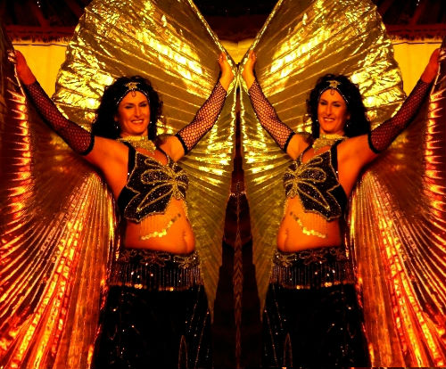

For unique entertainment, Desert Flame offers an exciting, vibrant, colourful and authentic Belly Dance Show which will mesmerize audiences
from young to old!
Alexandra’s joyful and diverse performance captures the spirit of Egyptian Cabaret or Traditional Folkloric, Bollywood and the earthy American Tribal Style of this ancient, exotic dance.
With accompanying drummers, swords, veils, canes, Isis wings or stunning head candelabra to enhance their performance
- be transported to another place and time!
Desert Flame is available for:
Festivals & Workshops
Variety shows
Restaurants
Corporate Events
Hen’s Parties & Weddings
Birthday & Christmas Parties
Weekly Classes – in all areas of Central Coast
Solo – Duo – Troupes
and
Any occasion which celebrates life!
ALEXANDRAwww.AlexandraBellydance.com.au 
Classes are held in Toukley |
Alexandra has been teaching and performing for over 12 years.
The successful Desert Flame School of Belly Dance offers classes from Beginners to Advanced in various styles of Bellydance.
Students are given the opportunity to perform at haflas, concerts, festivals and events. Regional and Interstate Workshops and Private lessons are also available.
Come and try out this fun, sensual, dynamic dance/art form of belly dance and feel the difference it makes in your body & spirit!!
You can also check out these two great websites:
www.AussieBellydance.com
www.WhatsOnCentralCoast.com.au